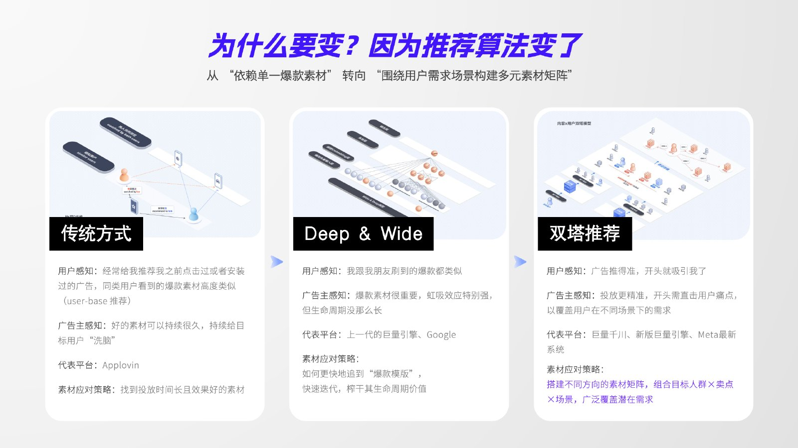
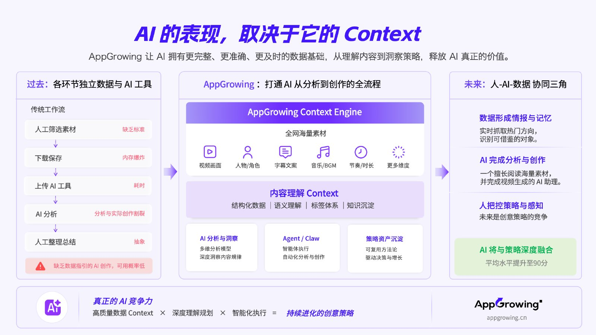
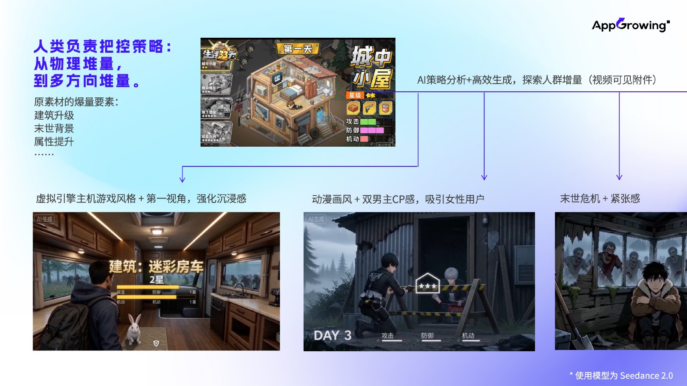
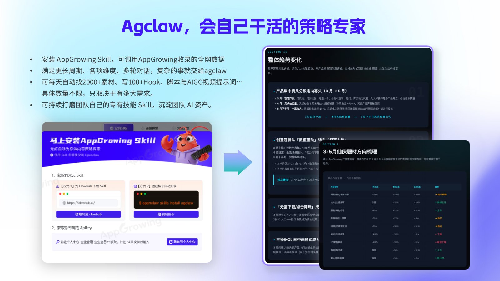

AppGrowing 中国版 · 游戏版解决方案
完整文档 · 26 页
第 1 页 / 共 26 页第 2 页 / 共 26 页第 3 页 / 共 26 页
第 4 页 / 共 26 页
第 5 页 / 共 26 页第 6 页 / 共 26 页第 7 页 / 共 26 页第 8 页 / 共 26 页第 9 页 / 共 26 页第 10 页 / 共 26 页第 11 页 / 共 26 页第 12 页 / 共 26 页第 13 页 / 共 26 页第 14 页 / 共 26 页第 15 页 / 共 26 页第 16 页 / 共 26 页第 17 页 / 共 26 页第 18 页 / 共 26 页第 19 页 / 共 26 页第 20 页 / 共 26 页
第 21 页 / 共 26 页第 22 页 / 共 26 页
第 23 页 / 共 26 页第 24 页 / 共 26 页第 25 页 / 共 26 页第 26 页 / 共 26 页